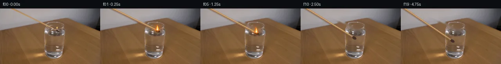

![首帧]()

Round 00
2026-11-05T06:09:28.344836+00:00像素候选变化代码 +298/−0inspection 更新
pixels 799a18f83c01c4b8 · code 8b61902c2a41817b
查看本轮 generate.py 真实 diff
--- previous/generate.py
+++ current/generate.py
@@ -0,0 +1,298 @@
+from pathlib import Path
+import math
+
+import cv2
+import numpy as np
+from PIL import Image, ImageDraw, ImageFilter
+
+import artifact_io
+
+
+ROOT = Path(__file__).resolve().parent
+W, H = 256, 144
+SS = 4
+
+
+def smoothstep(x):
+ x = min(1.0, max(0.0, float(x)))
+ return x * x * (3.0 - 2.0 * x)
+
+
+def over(base, rgba):
+ """Straight-alpha RGBA over an RGB uint8 array."""
+ src = rgba[..., :3].astype(np.float32)
+ alpha = rgba[..., 3:4].astype(np.float32) / 255.0
+ dst = base.astype(np.float32)
+ return np.clip(dst * (1.0 - alpha) + src * alpha, 0, 255).astype(np.uint8)
+
+
+def make_clean_plate(source):
+ """Remove only the original match, head, and flame with local inpainting."""
+ yy, xx = np.mgrid[0:H, 0:W]
+ # Numeric fit of the warm stick's centerline: y = 0.5*x - 16.
+ distance = np.abs(yy - (0.5 * xx - 16.0)) / math.sqrt(1.25)
+ mask = ((xx >= 25) & (xx <= 149) & (distance <= 4.25))
+
+ # Compact observed head and flame footprints at the right endpoint.
+ head = (((xx - 148.0) / 7.0) ** 2 + ((yy - 58.0) / 5.0) ** 2) <= 1.0
+ flame_poly = np.zeros((H, W), np.uint8)
+ cv2.fillPoly(
+ flame_poly,
+ [np.array([[137, 56], [139, 50], [143, 44], [148, 48],
+ [151, 54], [150, 58], [143, 59]], np.int32)],
+ 1,
+ )
+ mask = (mask | head | flame_poly.astype(bool)).astype(np.uint8) * 255
+ mask = cv2.dilate(mask, np.ones((3, 3), np.uint8), iterations=1)
+ clean = cv2.inpaint(source, mask, 4.0, cv2.INPAINT_TELEA)
+ return clean, mask
+
+
+def highres_point(p):
+ return tuple(int(round(v * SS)) for v in p)
+
+
+def draw_match(angle, flame_strength, frame_number):
+ """Render a rigid, antialiased match and its attached flame in RGBA."""
+ layer = Image.new("RGBA", (W * SS, H * SS), (0, 0, 0, 0))
+ draw = ImageDraw.Draw(layer, "RGBA")
+
+ pivot = np.array([-52.0, -42.0], np.float64)
+ length = math.hypot(200.0, 100.0)
+ direction = np.array([math.cos(angle), math.sin(angle)])
+ normal = np.array([-direction[1], direction[0]])
+ head = pivot + length * direction
+ # Draw from well outside the frame so the match always enters at the edge.
+ start = pivot - 16.0 * direction
+
+ # Soft lower edge, wood body, and fine warm highlight reproduce the sampled
+ # photographic cross-section without moving any unrelated source pixels.
+ a = highres_point(start + 1.15 * normal)
+ b = highres_point(head + 1.15 * normal)
+ draw.line([a, b], fill=(88, 58, 34, 72), width=7 * SS)
+ draw.line([highres_point(start), highres_point(head)],
+ fill=(174, 128, 82, 255), width=5 * SS)
+ draw.line([highres_point(start - 0.75 * normal),
+ highres_point(head - 0.75 * normal)],
+ fill=(211, 167, 112, 225), width=2 * SS)
+ draw.line([highres_point(start + 1.35 * normal),
+ highres_point(head + 1.35 * normal)],
+ fill=(118, 80, 49, 180), width=1 * SS)
+
+ # Elongated charred match head aligned with the stick.
+ center = head - 0.5 * direction
+ long_r, short_r = 5.8, 3.6
+ pts = []
+ for i in range(32):
+ q = 2.0 * math.pi * i / 32.0
… diff truncated; 211 more lines …